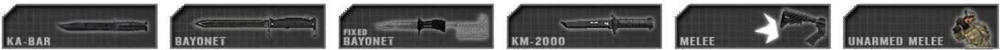
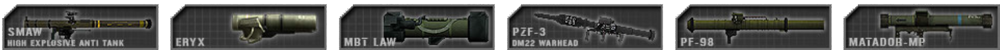

Armi ed Equipaggiamento
Armi Generiche ed Equipaggiamento
Le armi, dopo un movimento prolungato, talvolta impiegano un momento per acquisire precisione e colpire con precisione bersagli a lunga distanza. Gli scontri a distanze brevi non sono influenzati dalla deviazione dovuta al movimento. Ciò consente ai giocatori di apportare piccole correzioni di posizione senza subire l'errore di precisione dell'arma. Mettersi prono riduce notevolmente la precisione del giocatore per alcuni istanti, ma fornisce la massima precisione per impegnare bersagli a lunga distanza una volta che la mira del giocatore si è ripresa.
La maggior parte delle armi è impostata per il funzionamento semiautomatico come impostazione predefinita.
Le armi devono essere ricaricate manualmente (predefinito: R). La deviazione delle armi non è influenzata dall'uso di ottiche o mirini. Si noti che gli indicatori di distanza per i proiettili presenti in alcuni fucili dotati di ottiche sono solo decorativi e non funzionano; la caduta dei proiettili, visibile dal centro del reticolo, inizia a influenzare la traiettoria del proiettile solo a distanze moderatamente elevate (500 m e oltre) ed è molto più lieve di quanto indicato dai segni di distanza delle ottiche. Il punto di mira si trova al centro del reticolo, indipendentemente da tutti gli indicatori di distanza effettivi che l'ottica potrebbe indicare per il personale militare. Le armi sono classificate in categorie su PR:BF2, spesso collegate ai kit con cui vengono utilizzate:
 Fucili d'assalto sono generalmente disponibili in diverse varianti con diversi mirini. Mirare con ottiche con ingrandimento offre un vantaggio in termini di precisione, ma è ostacolato da una visione periferica notevolmente ridotta rispetto ai mirini reflex o alle mire metalliche.
Fucili d'assalto sono generalmente disponibili in diverse varianti con diversi mirini. Mirare con ottiche con ingrandimento offre un vantaggio in termini di precisione, ma è ostacolato da una visione periferica notevolmente ridotta rispetto ai mirini reflex o alle mire metalliche.
Kit: Tutti i kit che non utilizzano un'altra arma principale o che sono disarmati
 Lanciagranate sotto canna (UGL) sono installati sotto i fucili d'assalto e vengono utilizzati contro gruppi di nemici o individui che non possono essere colpiti con il fuoco diretto. Sono anche efficaci contro i veicoli non corazzati e possono essere utilizzati efficacemente a distanze ben oltre i 200 metri. Le granate devono percorrere 28 metri prima di armarsi o non detoneranno. Gli UGL possono anche sparare granate fumogene utilizzate per oscurare la vista del nemico. La portata del lanciagranate può essere regolata utilizzando una mira regolabile collegata all'arma. Mentre si mira attraverso questo mirino, è possibile utilizzare il menu della radio principale (predefinito: Q) per impostare la portata alla distanza del bersaglio (vedi Modificare la Regolazione della Distanza). Quando si ingaggiano bersagli più lontani o più vicini delle distanze predefinite, è importante compensare. Nelle mappe notturne, il lanciatore avrà anche accesso a colpi con bengala luminosi.
Lanciagranate sotto canna (UGL) sono installati sotto i fucili d'assalto e vengono utilizzati contro gruppi di nemici o individui che non possono essere colpiti con il fuoco diretto. Sono anche efficaci contro i veicoli non corazzati e possono essere utilizzati efficacemente a distanze ben oltre i 200 metri. Le granate devono percorrere 28 metri prima di armarsi o non detoneranno. Gli UGL possono anche sparare granate fumogene utilizzate per oscurare la vista del nemico. La portata del lanciagranate può essere regolata utilizzando una mira regolabile collegata all'arma. Mentre si mira attraverso questo mirino, è possibile utilizzare il menu della radio principale (predefinito: Q) per impostare la portata alla distanza del bersaglio (vedi Modificare la Regolazione della Distanza). Quando si ingaggiano bersagli più lontani o più vicini delle distanze predefinite, è importante compensare. Nelle mappe notturne, il lanciatore avrà anche accesso a colpi con bengala luminosi.
Kit: Granatiere
 Armi secondarie sono tradizionalmente utilizzate dai capi squadra delle forze convenzionali come riserva e segno di autorità. Anche i cecchini sono equipaggiati con un'arma secondaria per l'autodifesa durante lo spostamento. Alcuni insorti che non hanno un'arma principale usano un'arma secondaria al suo posto.
Armi secondarie sono tradizionalmente utilizzate dai capi squadra delle forze convenzionali come riserva e segno di autorità. Anche i cecchini sono equipaggiati con un'arma secondaria per l'autodifesa durante lo spostamento. Alcuni insorti che non hanno un'arma principale usano un'arma secondaria al suo posto.
Kit: Ufficiale, Cecchino, Pilota, Capo della cellula, Granatiere Vietnamita, vari kit degli Insorti
 Fucili a pompa sono letali quando vengono utilizzati in spazi ristretti. Possono anche essere utilizzati per sfondare porte e cancelli chiusi. I civili insorti possono essere arrestati con proiettili di gomma, che simulano l'incapacitazione di un informatore. Alcuni fucili a pompa utilizzano proiettili perforanti che possono essere utilizzati solo per sfondare porte chiuse.
Fucili a pompa sono letali quando vengono utilizzati in spazi ristretti. Possono anche essere utilizzati per sfondare porte e cancelli chiusi. I civili insorti possono essere arrestati con proiettili di gomma, che simulano l'incapacitazione di un informatore. Alcuni fucili a pompa utilizzano proiettili perforanti che possono essere utilizzati solo per sfondare porte chiuse.
Kit: Fuciliere Breacher per le forze convenzionali. Vari kit Insorti / Hamas / Talebani / Milizia
 Fucili da tiratore scelto (DMR) sono utilizzati per ingaggiare bersagli prioritari lontani con fuoco accurato. Possono essere dispiegati per aumentare notevolmente la loro precisione a discapito della mobilità. La posizione del giocatore influisce sulla precisione a lunga distanza quando il DMR è dispiegato, e la posizione di fuoco ottimale è quella prona. Sparando a bersagli a più di 500 metri di distanza, la caduta del proiettile inizia a essere un fattore di rilievo. Solleva leggermente il fucile sopra il punto di impatto previsto. Se il proiettile colpisce ancora in basso, regola di conseguenza e riprova. È comunque fondamentale compensare per i bersagli in movimento a distanza. Per massimizzare la precisione, il tiratore dovrebbe aspettare circa un secondo per ogni colpo sparato.
Fucili da tiratore scelto (DMR) sono utilizzati per ingaggiare bersagli prioritari lontani con fuoco accurato. Possono essere dispiegati per aumentare notevolmente la loro precisione a discapito della mobilità. La posizione del giocatore influisce sulla precisione a lunga distanza quando il DMR è dispiegato, e la posizione di fuoco ottimale è quella prona. Sparando a bersagli a più di 500 metri di distanza, la caduta del proiettile inizia a essere un fattore di rilievo. Solleva leggermente il fucile sopra il punto di impatto previsto. Se il proiettile colpisce ancora in basso, regola di conseguenza e riprova. È comunque fondamentale compensare per i bersagli in movimento a distanza. Per massimizzare la precisione, il tiratore dovrebbe aspettare circa un secondo per ogni colpo sparato.
Kit: Tiratore Scelto
 Fucili da cecchino sono utilizzati per ingaggiare bersagli ad alta priorità a lunghe distanze. La loro cadenza di fuoco è lenta poiché operano con azione a otturatore girevole. La posizione del giocatore influenza la precisione a lunga distanza del fucile da cecchino. Sono il tipo più preciso di arma da fuoco tenuta in mano dalla fanteria e colpiscono con grande precisione una volta che la deviazione si è stabilizzata. Come per i DMR, la compensazione della caduta del proiettile non è necessaria a meno che la distanza del bersaglio superi i circa 500 metri, ma mirare al petto di un nemico in piedi a distanze più elevate garantisce che il proiettile colpisca l'area dello stomaco, il che causerà l'incapacitazione. Solo i bersagli lontani, che sono per lo più dietro copertura o in posizione prona, richiederanno di mirare sopra il petto o alla testa per andare a segno. La massima precisione si ottiene aspettando circa 8 secondi dopo il movimento e 4 secondi dopo il ogni colpo sparato.
Fucili da cecchino sono utilizzati per ingaggiare bersagli ad alta priorità a lunghe distanze. La loro cadenza di fuoco è lenta poiché operano con azione a otturatore girevole. La posizione del giocatore influenza la precisione a lunga distanza del fucile da cecchino. Sono il tipo più preciso di arma da fuoco tenuta in mano dalla fanteria e colpiscono con grande precisione una volta che la deviazione si è stabilizzata. Come per i DMR, la compensazione della caduta del proiettile non è necessaria a meno che la distanza del bersaglio superi i circa 500 metri, ma mirare al petto di un nemico in piedi a distanze più elevate garantisce che il proiettile colpisca l'area dello stomaco, il che causerà l'incapacitazione. Solo i bersagli lontani, che sono per lo più dietro copertura o in posizione prona, richiederanno di mirare sopra il petto o alla testa per andare a segno. La massima precisione si ottiene aspettando circa 8 secondi dopo il movimento e 4 secondi dopo il ogni colpo sparato.
Kit: Cecchino
 Mitragliette (SMG) sono utilizzate in ingaggi a distanza ravvicinata. La loro cadenza di fuoco è rapida e sparano principalmente munizioni per pistole come proiettili da 9 mm, sebbene alcune utilizzino un tipo corto di munizioni da fucile. Questi sono comunemente definite armi da difesa personale (PDW) e si collocano a livello intermedio tra le SMG e i fucili d'assalto in termini di maneggevolezza, rinculo, danni e precisione, ma hanno un funzionamento più simile a quello delle SMG a causa della mancanza di accessori ottici con ingrandimento.
Mitragliette (SMG) sono utilizzate in ingaggi a distanza ravvicinata. La loro cadenza di fuoco è rapida e sparano principalmente munizioni per pistole come proiettili da 9 mm, sebbene alcune utilizzino un tipo corto di munizioni da fucile. Questi sono comunemente definite armi da difesa personale (PDW) e si collocano a livello intermedio tra le SMG e i fucili d'assalto in termini di maneggevolezza, rinculo, danni e precisione, ma hanno un funzionamento più simile a quello delle SMG a causa della mancanza di accessori ottici con ingrandimento.
Kit: Membro dell'Equipaggio, Fuciliere AT, Anticarro Pesante, Capo squadra, Fuciliere Breacher nelle forze non convenzionali
 Mitragliatrici leggere (LMG) sono utilizzate per sopprimere il nemico e possono devastare una squadra nemica quando vengono utilizzate a media distanza o negli agguati. Possono essere dispiegate per aumentare notevolmente la loro precisione, stabilità e gittata. Quando si utilizza una LMG dispiegata, la precisione aumenta ma solo quando la mobilità è minima e non è adatta all'uso in movimento. La modalità dispiegata riduce anche le imprecisioni dovute al fuoco e consente all'operatore di sparare raffiche più lunghe con maggiore precisione rispetto a tutte le altre armi automatiche portatili. A seconda della distanza dal nemico, le raffiche da 3 a 7 colpi con brevi pause sono il modo ideale per utilizzare queste armi al massimo della loro efficacia. Le LMG con alimentazione con munizionamento a nastro di solito hanno 100 colpi, alcune addirittura di più, ma impiegano molto tempo per ricaricare, il che significa che quelle con caricatore a scatola sono più rapide in questo senso ma bisogna fare molta più attenzione a quanti colpi si sparano con l'attuale caricatore. La posizione del giocatore influisce sulla precisione a lunga distanza e la posizione di fuoco ottimale è quella prona. In questa posizione otterrai la massima precisione a lunghe distanze. La modalità non schierata è utilizzata quando un giocatore è in movimento e ha bisogno di rispondere al fuoco rapidamente a distanze più brevi.
Mitragliatrici leggere (LMG) sono utilizzate per sopprimere il nemico e possono devastare una squadra nemica quando vengono utilizzate a media distanza o negli agguati. Possono essere dispiegate per aumentare notevolmente la loro precisione, stabilità e gittata. Quando si utilizza una LMG dispiegata, la precisione aumenta ma solo quando la mobilità è minima e non è adatta all'uso in movimento. La modalità dispiegata riduce anche le imprecisioni dovute al fuoco e consente all'operatore di sparare raffiche più lunghe con maggiore precisione rispetto a tutte le altre armi automatiche portatili. A seconda della distanza dal nemico, le raffiche da 3 a 7 colpi con brevi pause sono il modo ideale per utilizzare queste armi al massimo della loro efficacia. Le LMG con alimentazione con munizionamento a nastro di solito hanno 100 colpi, alcune addirittura di più, ma impiegano molto tempo per ricaricare, il che significa che quelle con caricatore a scatola sono più rapide in questo senso ma bisogna fare molta più attenzione a quanti colpi si sparano con l'attuale caricatore. La posizione del giocatore influisce sulla precisione a lunga distanza e la posizione di fuoco ottimale è quella prona. In questa posizione otterrai la massima precisione a lunghe distanze. La modalità non schierata è utilizzata quando un giocatore è in movimento e ha bisogno di rispondere al fuoco rapidamente a distanze più brevi.
Kit: Mitragliere di Squadra
 Mitragliatrici medie (MMG) sono una versione di classe media della mitragliatrice. Utilizzano proiettili di calibro più grande da 7,62 mm, che possono avere effetti devastanti in determinate situazioni ed è eccellente per sopprimere il nemico a lunga distanza, ma sono limitate a operare solo in modalità dispiegata a causa del peso. Dopo tratti di movimento più lunghi, impiegano circa 7 secondi per raggiungere la massima precisione di fuoco. Anche se non quanto i loro omologhi più piccoli, le MMG possono sparare raffiche lunghe di fuoco automatico o fuoco rapido con una penalità di precisione e rinculo inferiore rispetto ad altre armi automatiche. Grazie al loro danno incrementato e all'alta capacità, possono anche essere utilizzate in modo realistico per danneggiare i veicoli nemici non corazzati e i loro passeggeri. A differenza delle LMG, le MMG sono tutte alimentate a nastro e quindi richiedono del tempo per ricaricare.
Mitragliatrici medie (MMG) sono una versione di classe media della mitragliatrice. Utilizzano proiettili di calibro più grande da 7,62 mm, che possono avere effetti devastanti in determinate situazioni ed è eccellente per sopprimere il nemico a lunga distanza, ma sono limitate a operare solo in modalità dispiegata a causa del peso. Dopo tratti di movimento più lunghi, impiegano circa 7 secondi per raggiungere la massima precisione di fuoco. Anche se non quanto i loro omologhi più piccoli, le MMG possono sparare raffiche lunghe di fuoco automatico o fuoco rapido con una penalità di precisione e rinculo inferiore rispetto ad altre armi automatiche. Grazie al loro danno incrementato e all'alta capacità, possono anche essere utilizzate in modo realistico per danneggiare i veicoli nemici non corazzati e i loro passeggeri. A differenza delle LMG, le MMG sono tutte alimentate a nastro e quindi richiedono del tempo per ricaricare.
Kit: Mitragliere Pesante
 Granate a frammentazione hanno un ampio raggio di esplosione, ma non sono precise quando vengono lanciate in movimento o saltando e la loro gittata è relativamente bassa. Impiegano circa 5 secondi prima di detonare. Alcune granate come le granate RGO e le RKG esplodono al momento dell'impatto. La RKG è anche un esempio di una granata destinata all'uso contro i veicoli. Le pietre causano solo ferite lievi quando colpiscono un giocatore, ma diversi colpi possono comunque essere letali. Per avvertire i tuoi alleati prima di lanciare una granata, puoi usare il tasto della radio principale (predefinito: Q) mentre tieni in mano la granata per urlare un avvertimento, o in alternativa, utilizza il Mumble.
Granate a frammentazione hanno un ampio raggio di esplosione, ma non sono precise quando vengono lanciate in movimento o saltando e la loro gittata è relativamente bassa. Impiegano circa 5 secondi prima di detonare. Alcune granate come le granate RGO e le RKG esplodono al momento dell'impatto. La RKG è anche un esempio di una granata destinata all'uso contro i veicoli. Le pietre causano solo ferite lievi quando colpiscono un giocatore, ma diversi colpi possono comunque essere letali. Per avvertire i tuoi alleati prima di lanciare una granata, puoi usare il tasto della radio principale (predefinito: Q) mentre tieni in mano la granata per urlare un avvertimento, o in alternativa, utilizza il Mumble.
Kit: Granate: la maggior parte dei kit di fanteria, in particolare Ufficiali e Fucilieri | Pietre: civili e vari kit degli insorti
Coltelli e baionette sono istantaneamente letali se colpiscono il nemico. I combattenti insorti nemici che vengono uccisi con un coltello contano come un arresto. Gli attacchi corpo a corpo da disarmati richiedono circa 5 colpi per uccidere un nemico.
Kit: Corpo a corpo con arma bianca: tutti tranne Pilota, Civile e Disarmati | Corpo a corpo disarmato: Pilota e Disarmati
 Lanciamissili anticarro leggeri (LAT) vengono utilizzati contro bersagli non corazzati e leggermente corazzati. Non sono efficaci contro mezzi corazzati medi o pesanti. Ci vuole del tempo affinché il lanciamissili sia pronto per fare fuoco quando viene equipaggiato, e ci vuole del tempo per stabilizzarsi dopo essersi mossi. Molti lanciamissili utilizzano organi di mire metalliche con l'opzione di essere regolati. Per regolarli, premi e tieni premuto il tasto menu radiale dei comandi principali (predefinito: Q), quindi seleziona la distanza tramite click sinistro. ((vedi Alterare la Distanza di Miraggio)) Altri lanciamissili sono dotati di un mirino ottico con marcature di gittata funzionanti e quindi non richiedono di essere regolati. Infine, un piccolo gruppo di sistemi utilizza un ottica ma deve essere regolato prima del lancio. Quando si ingaggiano bersagli tra le distanze impostate, è possibile compensare manualmente l'angolo di attacco sollevando o abbassando il mirino per eseguire un colpo efficace sul bersaglio.
Lanciamissili anticarro leggeri (LAT) vengono utilizzati contro bersagli non corazzati e leggermente corazzati. Non sono efficaci contro mezzi corazzati medi o pesanti. Ci vuole del tempo affinché il lanciamissili sia pronto per fare fuoco quando viene equipaggiato, e ci vuole del tempo per stabilizzarsi dopo essersi mossi. Molti lanciamissili utilizzano organi di mire metalliche con l'opzione di essere regolati. Per regolarli, premi e tieni premuto il tasto menu radiale dei comandi principali (predefinito: Q), quindi seleziona la distanza tramite click sinistro. ((vedi Alterare la Distanza di Miraggio)) Altri lanciamissili sono dotati di un mirino ottico con marcature di gittata funzionanti e quindi non richiedono di essere regolati. Infine, un piccolo gruppo di sistemi utilizza un ottica ma deve essere regolato prima del lancio. Quando si ingaggiano bersagli tra le distanze impostate, è possibile compensare manualmente l'angolo di attacco sollevando o abbassando il mirino per eseguire un colpo efficace sul bersaglio.
Kit: Fuciliere AT, Anticarro della Milizia / Talebani / Hamas
Lanciamissili anticarro pesanti (HAT) sono utilizzati per ingaggiare i veicoli corazzati. Possono distruggere veicoli leggeri e medi con un solo colpo. Tuttavia, i carri armati pesanti (MBT) possono resistere a colpi frontali multipli ed è consigliabile sparare solo quando si è in grado di colpire i lati, il retro o la parte superiore del carro armato, è con quest'ultima opzione che si garantiscono eliminazioni istantanee, tranne per alcune testate specifiche. Per preparare l'arma al fuoco, è prima necessario stabilizzare l'arma per un periodo di tempo definito, circa 10 secondi. A differenza dei LAT, la maggior parte degli HAT al di fuori di quelli usati dalle forze non convenzionali è dotata almeno di un ottica. Alcuni potrebbero non avere segni di distanza e invece hanno la possibilità di essere guidati dall'operatore dopo il lancio, in questo caso si tratta di un sistema di missile anticarro teleguidato (ATGM) e non di un semplice lanciarazzi. Quando si utilizza un ATGM, l'operatore deve tenere premuto il tasto di fuoco fino al lancio del missile (il tempo varia a seconda del sistema di lancio), il che è indicato da un SEEK verde visualizzato sopra la bussola. Dopo il lancio, i missili hanno circa 600 metri di distanza di guida prima che il segnale utilizzato per inviare comandi di movimento al missile si interrompa, in questo caso il missile perde il controllo ed è molto improbabile che vada a segno. La dipendenza dal segnale per controllare il missile rende anche impossibile far girare il missile intorno agli angoli degli edifici e agli ostacoli di qualsiasi tipo. I missili spesso eseguono anche una leggera traiettoria a spirale intorno al punto d'impatto, è necessario che l'operatore dia al missile un certo margine di manovra. Alcuni di questi sistemi d'arma non possono essere lanciati dalla posizione prona, tentare di lanciarli da tale posizione causerà il malfunzionamento completo del sistema d'arma. Se ciò accade, il kit deve essere abbandonato, causando la sua scomparsa dopo alcuni minuti. (Vedi la sezione Procedura per l'abbandono del kit) Molti sistemi ATGM hanno una modalità di attacco dall'alto automaticamente eseguita integrata che può essere selezionata prima del lancio tramite il tasto principale del menu radiale dei comandi (predefinito: Q) durante la mira con il sistema d'arma. La modalità di attacco dall'alto aumenta le possibilità di colpire con successo la parte superiore più debole della corazza di un bersaglio, ma richiede del tempo aggiuntivo per far salire il missile alla giusta quota e farlo scendere sul bersaglio. Aumenta inoltre la distanza minima a cui l'arma può essere utilizzata a circa 150 metri, quindi l'operatore potrebbe voler selezionare invece la modalità di funzionamento diretto per ridurre il tempo di volo del missile e la distanza minima. Si noti che questi missili sono "intelligenti" e non dipendono dai controlli teleguidati per essere controllati, sono guidati dal punto di impatto scelto. Per motivi di gameplay, non sono "spara e dimentica" con sistema di tracciamento come i loro omologhi nella vita reale.
Kit: Anti Carro delle Forze Convenzionali
 Missili terra-aria (SAM) sono utilizzati per abbattere gli aeromobili nemici. Per raggiungere questo scopo, è necessario acquisire visivamente il bersaglio seguendolo mentre è in volo. Una volta stabilito il tracciamento, sentirai un segnale acustico a bassa tonalità, dopo alcuni secondi, quando viene effettuato l'aggancio, sentirai un segnale acustico secondario con tonalità alta, a questo punto puoi lanciare il missile. Contromisure come i flares ti impediranno di distruggere efficacemente il tuo bersaglio, quindi l'angolo di attacco rispetto alla direzione di spostamento del veicolo è fondamentale per colpirlo con successo. I piloti nemici riceveranno un segnale acustico di avvertimento pochi secondi dopo essere stati agganciati da un SAM, dando loro il tempo per effettuarre manovre evasive nei confronti dalla minaccia. Alcune fazioni più datate come le fazioni delle Falkland con il Blowpipe non avranno armi AA con aggancio automatico e dovranno essere guidate manualmente.
Missili terra-aria (SAM) sono utilizzati per abbattere gli aeromobili nemici. Per raggiungere questo scopo, è necessario acquisire visivamente il bersaglio seguendolo mentre è in volo. Una volta stabilito il tracciamento, sentirai un segnale acustico a bassa tonalità, dopo alcuni secondi, quando viene effettuato l'aggancio, sentirai un segnale acustico secondario con tonalità alta, a questo punto puoi lanciare il missile. Contromisure come i flares ti impediranno di distruggere efficacemente il tuo bersaglio, quindi l'angolo di attacco rispetto alla direzione di spostamento del veicolo è fondamentale per colpirlo con successo. I piloti nemici riceveranno un segnale acustico di avvertimento pochi secondi dopo essere stati agganciati da un SAM, dando loro il tempo per effettuarre manovre evasive nei confronti dalla minaccia. Alcune fazioni più datate come le fazioni delle Falkland con il Blowpipe non avranno armi AA con aggancio automatico e dovranno essere guidate manualmente.
Kit: Antiaerea
 Esplosivi detonati a distanza sono esplosivi che vengono fatti detonare da un detonatore remoto da parte dell'individuo che ha piazzato gli esplosivi e sono generalmente utilizzati per imboscate e difese. Le mine anti-uomo (Claymore) impiegano 5 secondi per armarsi dopo il posizionamento. Quando si attiva il detonatore, un suono indicherà quando è trascorso questo tempo. Se gli esplosivi vengono detonati in anticipo, non esploderanno. Gli IED non hanno questa protezione. La maggior parte degli esplosivi deve essere piazzati mentre si è in posizione prona. Un giocatore può posizionare fino a 4 mine anti-uomo e 5 panetti C4 o IED contemporaneamente. Alcuni soldati possono posizionare due gruppi indipendenti di esplosivi che possono essere attivati individualmente. Tutti questi esplosivi possono essere disinnescati dalla chiave inglese del geniere da combattimento. Dopo aver posizionato l'esplosivo, il gioco metterà automaticamente un'icona sulla mappa per gli alleati. Tuttavia, non riceveranno un indicatore visivo di questi sull'HUD a meno che non siano nelle vicinanze. I Demolitori insorti possono posizionare segnali di pietre impilate per avvisare gli alleati degli IED nascosti, ma potrebbero anche informare le forze di coalizione di stare in allerta. Se il posizionamento automatico dei marker sulla mappa non ha funzionato, è possibile premere e tenere premuto Q, quindi fare clic sinistro quando si seleziona un'arma di tipo IED per posizionare fino a 3 marker manualmente.
Esplosivi detonati a distanza sono esplosivi che vengono fatti detonare da un detonatore remoto da parte dell'individuo che ha piazzato gli esplosivi e sono generalmente utilizzati per imboscate e difese. Le mine anti-uomo (Claymore) impiegano 5 secondi per armarsi dopo il posizionamento. Quando si attiva il detonatore, un suono indicherà quando è trascorso questo tempo. Se gli esplosivi vengono detonati in anticipo, non esploderanno. Gli IED non hanno questa protezione. La maggior parte degli esplosivi deve essere piazzati mentre si è in posizione prona. Un giocatore può posizionare fino a 4 mine anti-uomo e 5 panetti C4 o IED contemporaneamente. Alcuni soldati possono posizionare due gruppi indipendenti di esplosivi che possono essere attivati individualmente. Tutti questi esplosivi possono essere disinnescati dalla chiave inglese del geniere da combattimento. Dopo aver posizionato l'esplosivo, il gioco metterà automaticamente un'icona sulla mappa per gli alleati. Tuttavia, non riceveranno un indicatore visivo di questi sull'HUD a meno che non siano nelle vicinanze. I Demolitori insorti possono posizionare segnali di pietre impilate per avvisare gli alleati degli IED nascosti, ma potrebbero anche informare le forze di coalizione di stare in allerta. Se il posizionamento automatico dei marker sulla mappa non ha funzionato, è possibile premere e tenere premuto Q, quindi fare clic sinistro quando si seleziona un'arma di tipo IED per posizionare fino a 3 marker manualmente.
Kit: Mine anti-uomo: Fuciliere AP | IED costruiti con Mine, Colpi di Mortaio e TNT: Demolitore | IED costruito con contenitore d'acqua: Demolitore e Geniere delle forze non convenzionali
 Esplosivi a detonazione a te,po sono esplosivi con un timer che esplodono poco dopo essere stati piazzati e vengono utilizzati principalmente per distruggere risorse statiche come FOB nemiche, casse di munizioni e veicoli nemici abbandonati. I due principali tipi di esplosivi a tempo sono i panetti di C4 grandi e piccole. Il C4 grande è poco più del doppio più potente del C4 piccolo e disponibile solo per il kit del geniere da combattimento delle forze convenzionali, mentre il C4 piccolo è trasportato sia dai kit del geniere da combattimento delle forze convenzionali che dal kit del breacher. È necessario posizionare una sola carica di C4 grande o piccola per distruggere una FOB, ma una singola carica di C4 piccola non distruggerà immediatamente una base, ma essa crollerà qualche secondo dopo che la carica è esplosa, dando alla squadra avversaria il tempo di ripararla. Per distruggere le fondamenta di una base o di un altra postazione fissa, basta posizionare un'altra carica di C4 piccola sulle fondamenta e verrà distrutta poco dopo l'esplosione. La carica di C4 piccola può essere utilizzata anche per distruggere veicoli fermi, basterà 1x C4 piccola per distruggere veicoli leggermente corazzati (Land Rover, auto civili, technical, HMMWV leggermente corazzati, ecc.), 2x C4 piccole per distruggere Jeep e camion corazzati (HMMWV con corazza superiore, Panther CLV, camion di supporto e logistica come l' M-35, ecc.), 3x C4 piccole per distruggere APC. La carica di C4 grande può essere disinnescata dalla chiave inglese del geniere da combattimento.
Esplosivi a detonazione a te,po sono esplosivi con un timer che esplodono poco dopo essere stati piazzati e vengono utilizzati principalmente per distruggere risorse statiche come FOB nemiche, casse di munizioni e veicoli nemici abbandonati. I due principali tipi di esplosivi a tempo sono i panetti di C4 grandi e piccole. Il C4 grande è poco più del doppio più potente del C4 piccolo e disponibile solo per il kit del geniere da combattimento delle forze convenzionali, mentre il C4 piccolo è trasportato sia dai kit del geniere da combattimento delle forze convenzionali che dal kit del breacher. È necessario posizionare una sola carica di C4 grande o piccola per distruggere una FOB, ma una singola carica di C4 piccola non distruggerà immediatamente una base, ma essa crollerà qualche secondo dopo che la carica è esplosa, dando alla squadra avversaria il tempo di ripararla. Per distruggere le fondamenta di una base o di un altra postazione fissa, basta posizionare un'altra carica di C4 piccola sulle fondamenta e verrà distrutta poco dopo l'esplosione. La carica di C4 piccola può essere utilizzata anche per distruggere veicoli fermi, basterà 1x C4 piccola per distruggere veicoli leggermente corazzati (Land Rover, auto civili, technical, HMMWV leggermente corazzati, ecc.), 2x C4 piccole per distruggere Jeep e camion corazzati (HMMWV con corazza superiore, Panther CLV, camion di supporto e logistica come l' M-35, ecc.), 3x C4 piccole per distruggere APC. La carica di C4 grande può essere disinnescata dalla chiave inglese del geniere da combattimento.
Kit: C4 piccola: geniere da combattimento delle forze convenzionali & Breacher | C4 grande: geniere da combattimento delle forze convenzionali
Mine sono esplosivi esplodono al contatto a cui hanno accesso le classi di geniere da combattimento. Saranno sepolti sotto una piccola chiazza di terra e diventeranno difficili da notare per i veicoli in movimento. Una volta posizionata una mina (premere e tenere premuto Q), come per l'IED, verrà visualizzato un marcatore sulla mappa della tua squadra, ma è anche possibile posizionare fino a 3 marker di mina manualmente. Le mine possono essere rimosse con la chiave inglese di un geniere da combattimento.
Kit: Geniere da combattimento
 Medicazioni da campo ripristinano il 25% della salute. Vengono lanciati a terra per curare il giocatore più vicino al bendaggio. I bendaggi da campo vengono selezionati premendo il tasto 8 o 9. Il kit di pronto soccorso può curare completamente un giocatore ed è utilizzato tenendo premuto il pulsante di fuoco mentre si punta alla persona da curare. I kit di pronto soccorso non vengono più lanciati e richiedono del tempo per curare completamente un giocatore gravemente ferito. Un medico può curare se stesso usando le bende fornite in dotazione. I giocatori all'interno di un veicolo con un medico guariranno automaticamente nel tempo. L'epipen viene invece utilizzato per rianimarli. I soldati appena rianimati necessitano di assistenza medica immediata per smettere di sanguinare. Trascinamento è utilizzato per spostare un giocatore ferito prima di somministrare un'iniezione di epinefrina. Devi essere in ginocchio per poterlo usare.
Medicazioni da campo ripristinano il 25% della salute. Vengono lanciati a terra per curare il giocatore più vicino al bendaggio. I bendaggi da campo vengono selezionati premendo il tasto 8 o 9. Il kit di pronto soccorso può curare completamente un giocatore ed è utilizzato tenendo premuto il pulsante di fuoco mentre si punta alla persona da curare. I kit di pronto soccorso non vengono più lanciati e richiedono del tempo per curare completamente un giocatore gravemente ferito. Un medico può curare se stesso usando le bende fornite in dotazione. I giocatori all'interno di un veicolo con un medico guariranno automaticamente nel tempo. L'epipen viene invece utilizzato per rianimarli. I soldati appena rianimati necessitano di assistenza medica immediata per smettere di sanguinare. Trascinamento è utilizzato per spostare un giocatore ferito prima di somministrare un'iniezione di epinefrina. Devi essere in ginocchio per poterlo usare.
Kit: Medicazione da campo: tutti i soldati | Kit di pronto soccorso, Trascinamento, Epipen: Medico da combattimento / Paramedico / Medico degli insorti
 Munizioni extra possono essere utilizzate quando un giocatore sta esaurendo le munizioni. Una singola sacca di munizioni di solito fornisce alcuni caricatori e una o due granate. La sacca delle munizioni può anche essere utilizzata per rifornire le postazioni fisse come le MG, i lanciamissili anticarro e le postazioni di mortaio.
Munizioni extra possono essere utilizzate quando un giocatore sta esaurendo le munizioni. Una singola sacca di munizioni di solito fornisce alcuni caricatori e una o due granate. La sacca delle munizioni può anche essere utilizzata per rifornire le postazioni fisse come le MG, i lanciamissili anticarro e le postazioni di mortaio.
Kit: Fuciliere e vari kit di fuciliere degli Insorti
Strumento per la Fortificazione viene utilizzato per costruire strutture posizionabili per la fazione. Non può essere utilizzato in modo offensivo. Per costruire una struttura, è necessario puntarla e tenere premuto il pulsante di fuoco finché l'animazione di scavo non si interrompe. L'opzione alternativa del menu radiale delle comunicazioni consente ai capisquadra di demolire le trincee alleate e i blocchi stradali di filo spinato.
Kit: Strumento per la Fortificazione: tutti tranne l'Ufficiale, il Medico da Combattimento / Paramedico, Cecchino, Pilota, Capo della Cellula e il Civile
Chiave Inglese: Geniere da Combattimento delle Forze Convenzionali
Granate Fumogene vengono utilizzate per nascondere gli spostamenti delle truppe o come strumento di sengalazione per i velivoli alleati. Generalmente, la cortina fumogena impiega circa 30 secondi per espandersi e coprire tutta l'area. La copertura dura più di un minuto prima di dissolversi. Kit: Granata Fumogena: la maggior parte dei kit | Granata Fumogena di Segnalazione: Ufficiale, Cecchino delle Forze Convenzionali, Pilota
 Binocoli consentono ai soldati di individuare nemici lontani e identificare contatti sconosciuti. Gli ufficiali e i capi della cellula possono anche utilizzare i loro binocoli per richiedere bombardamenti di mortaio. Il designatore laser per bersagli terrestri (GTLD) viene utilizzato per designare i bersagli per l'ingaggio da parte di aerei alleati e postazioni di mortai.
Binocoli consentono ai soldati di individuare nemici lontani e identificare contatti sconosciuti. Gli ufficiali e i capi della cellula possono anche utilizzare i loro binocoli per richiedere bombardamenti di mortaio. Il designatore laser per bersagli terrestri (GTLD) viene utilizzato per designare i bersagli per l'ingaggio da parte di aerei alleati e postazioni di mortai.
Kit: Binocoli: Membro dell'Equipaggio, Cecchino e la maggior parte dei kit nelle fazioni non convenzionali | GTLD: Ufficiale e Ricognitore per le forze convenzionali
 Radio e Cellulari vengono utilizzati per segnalare i contatti ostili al resto della squadra. Possono anche essere utilizzati dai capisquadra per richiedere il supporto di altre unità e per posizionare postazioni fisse.
Radio e Cellulari vengono utilizzati per segnalare i contatti ostili al resto della squadra. Possono anche essere utilizzati dai capisquadra per richiedere il supporto di altre unità e per posizionare postazioni fisse.
Kit: Ufficiale, Capo della Cellula, Ricognitore, Civile
 Il Rampino viene utilizzato per scalare muri, edifici o per accedere ai tetti delle strutture per consentire a membri chiave della squadra di avere il vantaggio dell'altezza. Dopo che il rampino si è agganciato con successo a una superficie, qualsiasi giocatore può salire sulla corda premendo il tasto "entrata/uscita" (predefinito: E) e muovendosi in avanti per salire e all'indietro per scivolare giù dalla corda. Rimangono agganciati per 3 minuti e possono essere recuperati dal giocatore utilizzando il tasto di raccolta dei kit (predefinito: G).
Il Rampino viene utilizzato per scalare muri, edifici o per accedere ai tetti delle strutture per consentire a membri chiave della squadra di avere il vantaggio dell'altezza. Dopo che il rampino si è agganciato con successo a una superficie, qualsiasi giocatore può salire sulla corda premendo il tasto "entrata/uscita" (predefinito: E) e muovendosi in avanti per salire e all'indietro per scivolare giù dalla corda. Rimangono agganciati per 3 minuti e possono essere recuperati dal giocatore utilizzando il tasto di raccolta dei kit (predefinito: G).
Kit: Fuciliere Breacher, Ricognitore, Civile
Paracadute vengono utilizzati dai piloti e dai paracadutisti. Vengono dispiegati automaticamente quando si spawna in una fazione che dispone di un'inserzione con paracadutisti. Quando si viene eiettati da un aeromobile a ala fissa, il sedile eiettabile dispiegherà automaticamente il paracadute. Può anche essere dispiegato manualmente in altri casi premendo il tasto 9. I paracadute devono essere aperti molto prima di toccare il suolo per evitare lesioni o in alcuni casi la morte. Dopo che il caposquadra ha toccato il suolo in una mappa dispone dei paracadutisti, accanto a lui appare una cassa di rifornimenti speciale. Questa cassa può essere utilizzata solo per richiedere kit.
Kit: Pilota, qualsiasi kit selezionabile utilizzato da una fazione che dispone di un punto di spawn con inserzione dei paracadutisti
Mirini d'Emergenza (BUIS)
Mire metalliche di backup (BUIS) sono progettate per fornire all'operatore un metodo alternativo per acquisire un bersaglio a seconda della situazione. Quando viene fornita un'arma con BUIS installato, un giocatore potrà passare tra i mirini di backup e l'ottica usando il tasto preesistente per il cambio della visuale (C). Nell'angolo in basso a destra si trova una piccola icona (Croce per l'ottica, Mire metalliche per BUIS) che mostra il metodo di mira attualmente selezionato. È possibile cambiare il sistema che si sta utilizzando mentre si mira, aumentando la capacità di individuare velocemente gli ostili o di mirare con precisione.
{% figure "../assets/buis.png" %} {% endfigure %}
Modificare la Regolazione della Distanza
{{ "Video Tutorial - Regolazione della Distanza" | youtube("cLfdH1EHWPA") }}